Center
(all of the information is taken from wikipedia.org)
The center (C)—also known as the five, the pivot or the big man—typically plays near the baseline or close to the basket (the "low post"). They are usually the tallest players on the floor. Centers usually score "down low", or "in the paint" (near the basket, in the key), but there have been many centers who are good perimeter shooters as well. They're typically skilled at pulling down rebounds, contesting shots and setting screens on players. Most big men goals are to create possessions with rebounding and trying to stop the other team from scoring in the paint.[13]
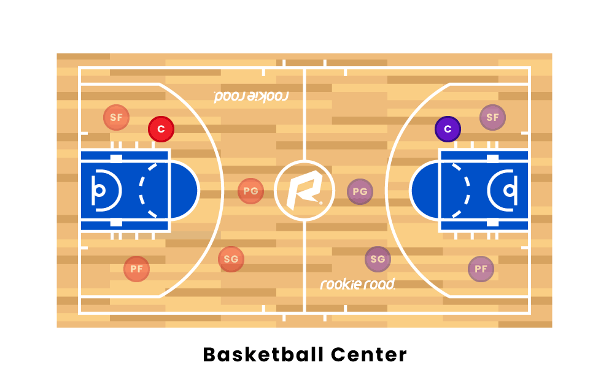
The range of players used in the position has transitioned from relatively slower but much taller "back to the basket" players to players who could also be classified as power forwards but who can dominate opponents with their defensive skills, or mismatch ability to shoot from the high post. This has been due to the scarcity of players possessing the combination of great skill, ideal height, and durability. The development of more fast-paced and athletic basketball play, which calls for less traditional center play and a more up-and-down-the-court play style has also contributed to the shift over time. In the NBA, they're usually over 6 feet 8 inches (2.03 m) tall.[14]
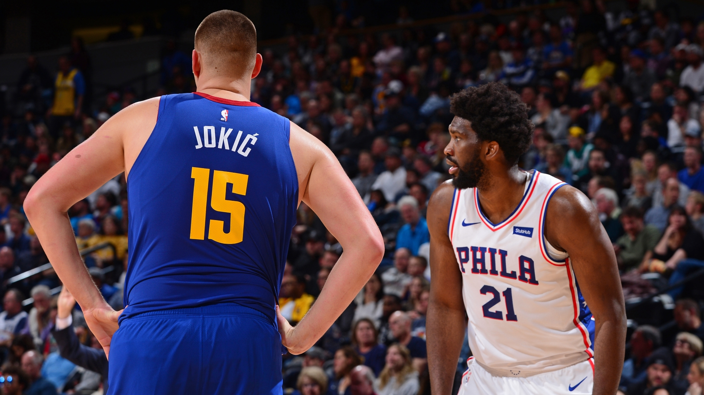
The presence of a center who can score in the low post (the area closest to the basket) helps create balance within an offense. Especially, if the big man has the footwork to do moves like drop steps, pivots, and more it can open up the game for their teammates.[13] If it becomes too easy to score from the low post, the center will get double teamed. This creates opportunity for open shots for perimeter players as the center will “kick it out” to an open perimeter or “wing” player. As perimeter players typically shoot better from long range, this may create easier opportunities for a center to score, since defenses often play out closer to the perimeter shooters.[citation needed]
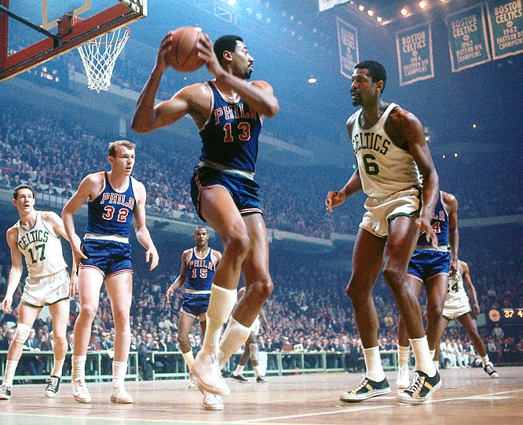
Tier List of All-time PG
Add Card
S
A
B
C
D
F
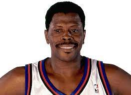

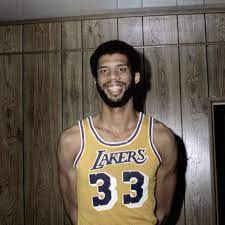
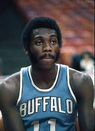
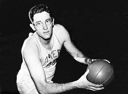
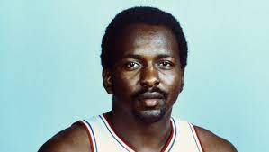
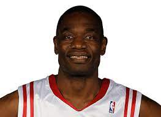

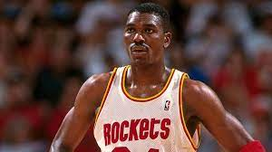
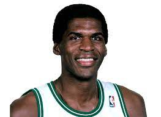